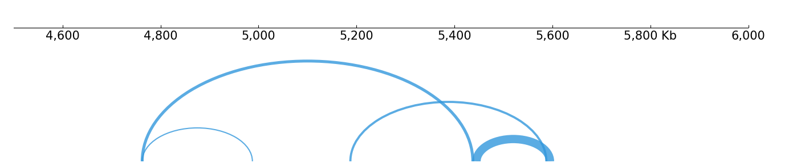
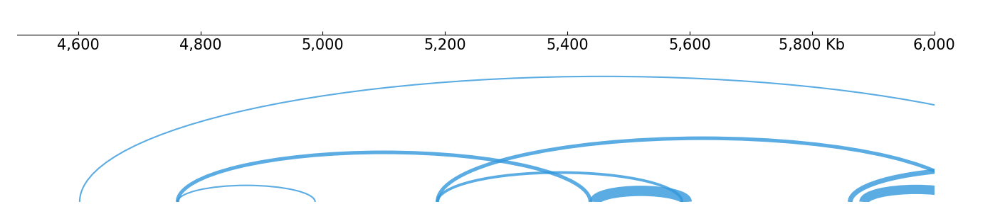
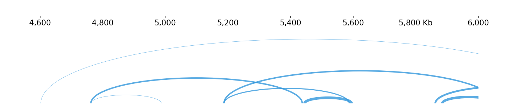
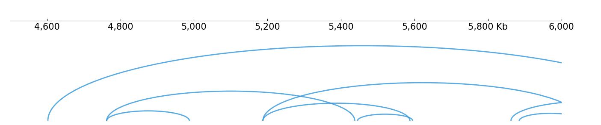
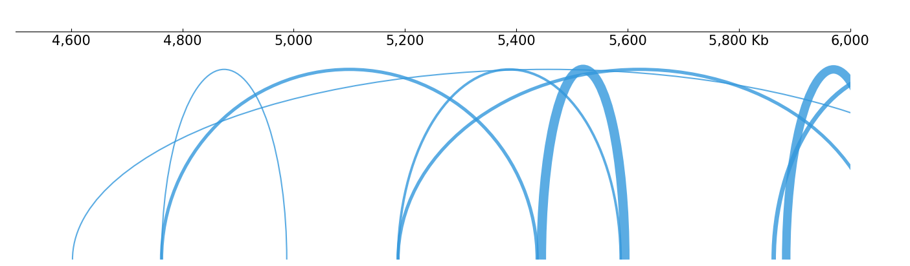
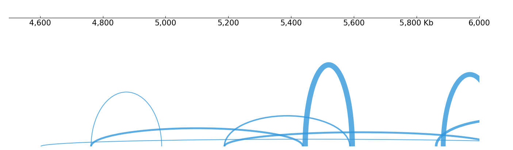
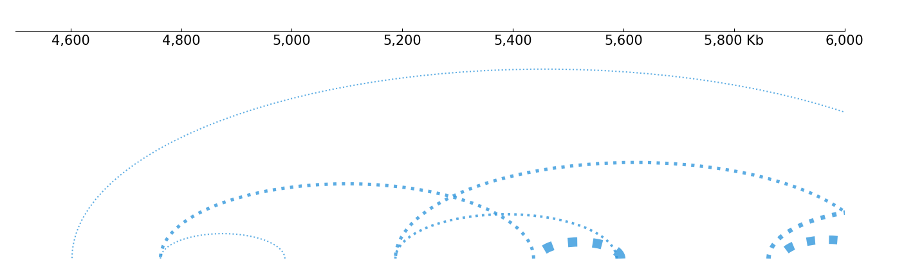
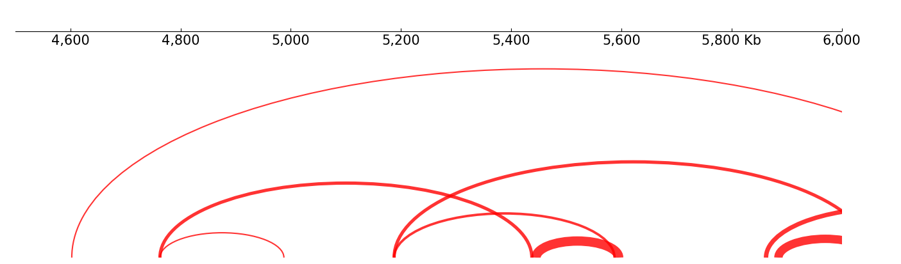
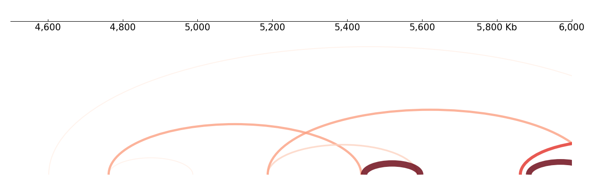
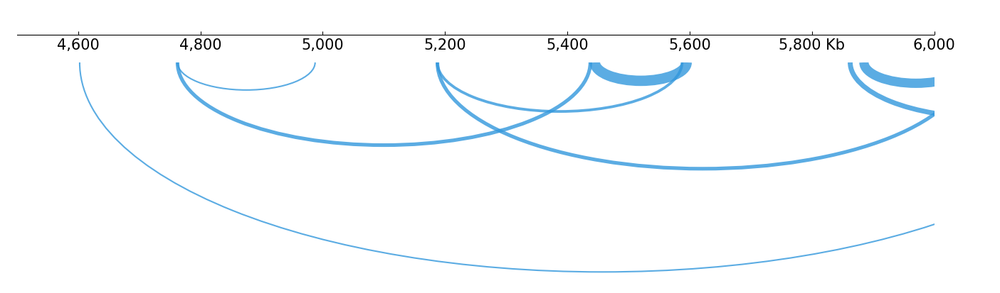

Arcs style
[1]:
import sys; sys.path.insert(0, "../../../")
import coolbox
from coolbox.api import *
[2]:
coolbox.__version__
[2]:
'0.4.0'
[3]:
bedpe_path = "../../../tests/test_data/bedpe_var_chr9_4000000_6000000.bedpe"
Open region
The “open_region” parameter control the behavior of contact fetching. If specified to False, will only fetch the contacts which it’s double sides located in the region.
[4]:
arc = Arcs(bedpe_path, open_region=False) + TrackHeight(5)
frame = XAxis() + arc
frame.plot("chr9:4500000-6000000")
realloc(): invalid next size
[4]:

Otherwise(default), will fetch the contacts only one side located in the region:
[5]:
arc = Arcs(bedpe_path, open_region=True) + TrackHeight(5)
frame = XAxis() + arc
frame.plot("chr9:4500000-6000000")
[5]:

Line width
Arcs will calculate the line width according to the contacts score specifed in BEDPE file. When you use Pairs file or scores are not provided in BEDPE, score will set to 1.
The default width calculation equation is: 0.5 + math.sqrt(score) You can change it with score_to_width parameter:
[6]:
arc = Arcs(bedpe_path, score_to_width="0.5 + np.log(score)") + TrackHeight(5)
frame = XAxis() + arc
frame.plot("chr9:4500000-6000000")
[6]:

If the static line width is needed, use the line_width parameter:
[7]:
arc = Arcs(bedpe_path, line_width=2) + TrackHeight(5)
frame = XAxis() + arc
frame.plot("chr9:4500000-6000000")
[7]:

Fill
Set the fill=True to fill arc area, and adjust color and alpha with fill_color, fill_alpha parameters:
[8]:
arc = Arcs(bedpe_path, fill=True, fill_alpha=0.2, fill_color="#3297dc") + TrackHeight(8)
frame = XAxis() + arc
frame.plot("chr9:4500000-6000000")
[8]:

Height
The arc height is calculate from it’s diameter(xmax - xmin), the default equation is: (max_height - 0.5) * diameter / max_diameter. It can be changed with diameter_to_height parameter, for example to use static height:
[9]:
arc = Arcs(bedpe_path, diameter_to_height="max_height-0.5") + TrackHeight(8)
frame = XAxis() + arc
frame.plot("chr9:4500000-6000000")
[9]:

Let shorter arcs has higher than longer:
[10]:
arc = Arcs(bedpe_path, diameter_to_height="(max_diameter/diameter)*0.5") + TrackHeight(8)
frame = XAxis() + arc
frame.plot("chr9:4500000-6000000")
[10]:

Line style
see linestyles.
[11]:
arc = Arcs(bedpe_path, line_style="dotted") + TrackHeight(8)
frame = XAxis() + arc
frame.plot("chr9:4500000-6000000")
[11]:

Color
Arcs deafault use statical color, set with color parameter:
[12]:
arc = Arcs(bedpe_path, color="red") + TrackHeight(8)
frame = XAxis() + arc
frame.plot("chr9:4500000-6000000")
[12]:

Dynamic color can be enabled with “cmap”, here is a example, other ColorMap can reference here.
[13]:
arc = Arcs(bedpe_path, cmap="Reds", vmin=0, vmax=30) + TrackHeight(8)
frame = XAxis() + arc
frame.plot("chr9:4500000-6000000")
[13]:

Orientation
Arcs canbe inverted:
[14]:
arc = Arcs(bedpe_path) + Inverted() + TrackHeight(8)
# Or:
#arc = Arcs(bedpe_path, orientation="inverted") + TrackHeight(8)
frame = XAxis() + arc
frame.plot("chr9:4500000-6000000")
[14]:
